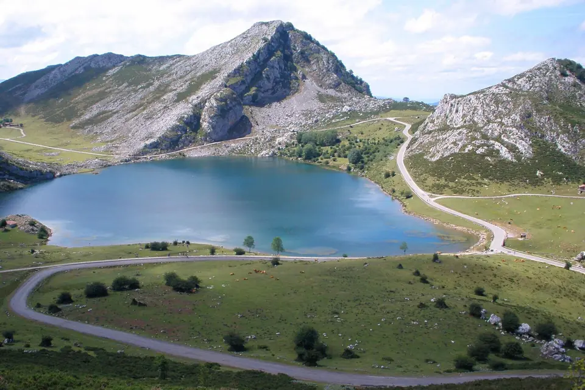
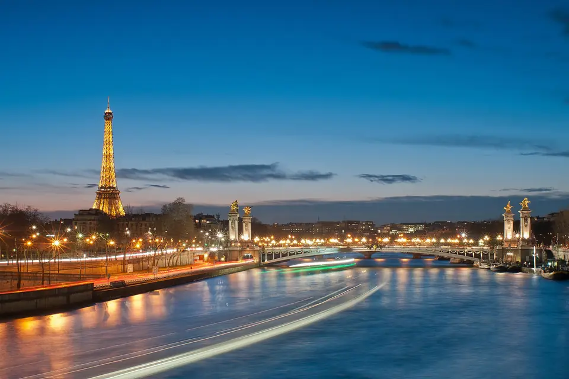
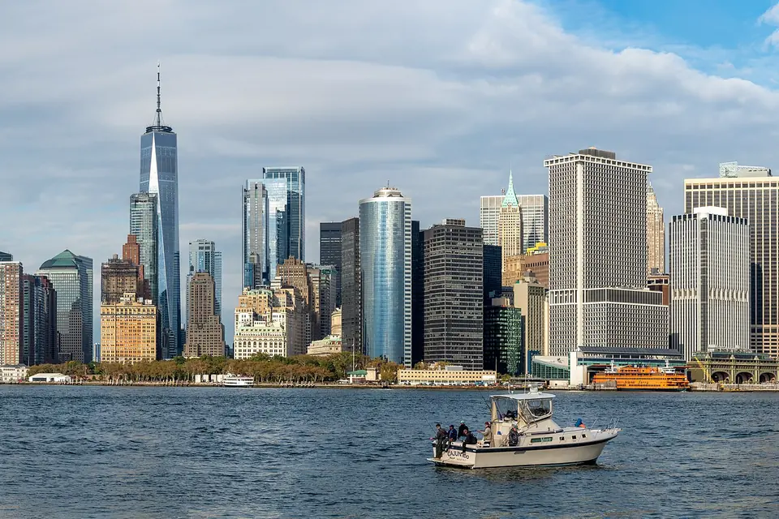
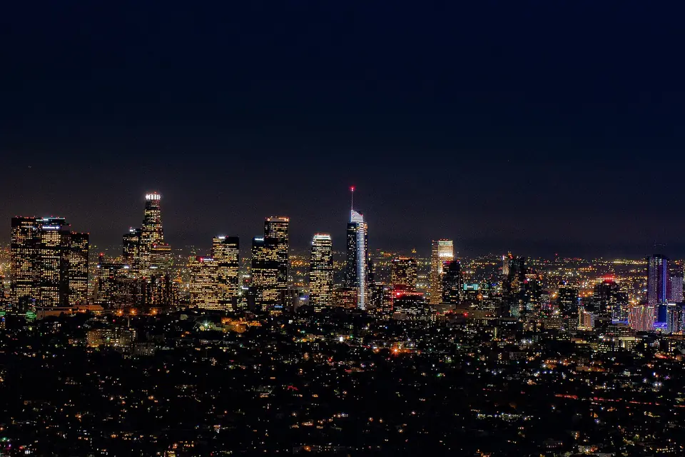
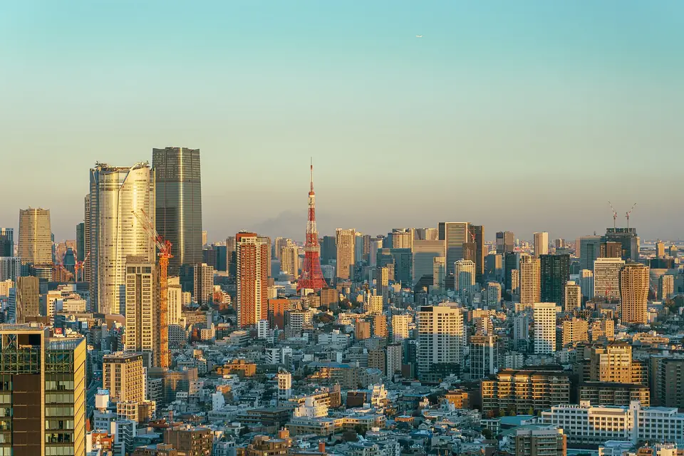
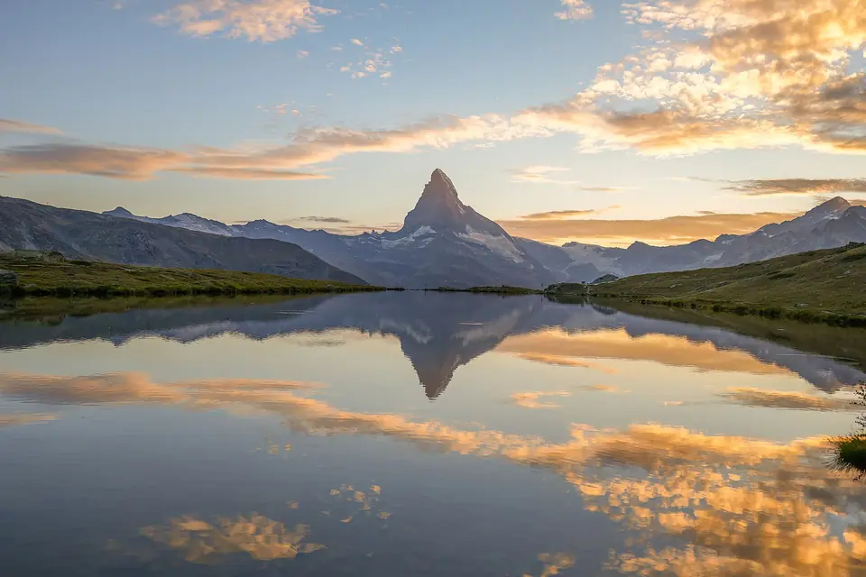

Spain
- Europe
- At home
My country and the one I know best: from north to south, there is always a new corner to discover.
Six countries, many corners of Spain and a list of pending destinations. Every trip has left me with a story.

My country and the one I know best: from north to south, there is always a new corner to discover.
So close and so different: its coast, its food and its people make me always want to go back.

History, art and cities with a special charm on the other side of the Pyrenees.
A small country among the mountains, perfect for a getaway in the heart of the Pyrenees.
Green landscapes, cliffs and a unique atmosphere in its streets and pubs.
Across the Atlantic: colours, flavours and a culture that hooks you from day one.
The list of places I really want to visit. One by one they will move to the section above.

The city that never sleeps: skyscrapers, Central Park and a rhythm I have only seen in films and series.

Hollywood, Pacific beaches and the mecca of the film and music I love so much.

Tradition and future on the same street: technology, temples and a completely different culture.

The Alps, postcard lakes and quiet cities among the mountains. A paradise for landscape lovers.
| Country | Continent | Official language |
|---|---|---|
| Spain | Europe | English |
| Portugal | Europe | Portuguese |
| France | Europe | French |
| Andorra | Europe | Catalan |
| Ireland | Europe | Irish and English |
| Mexico | America | Spanish (not declared official by law, but it is the language spoken) |